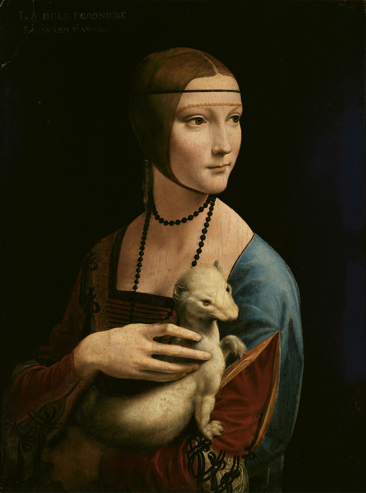
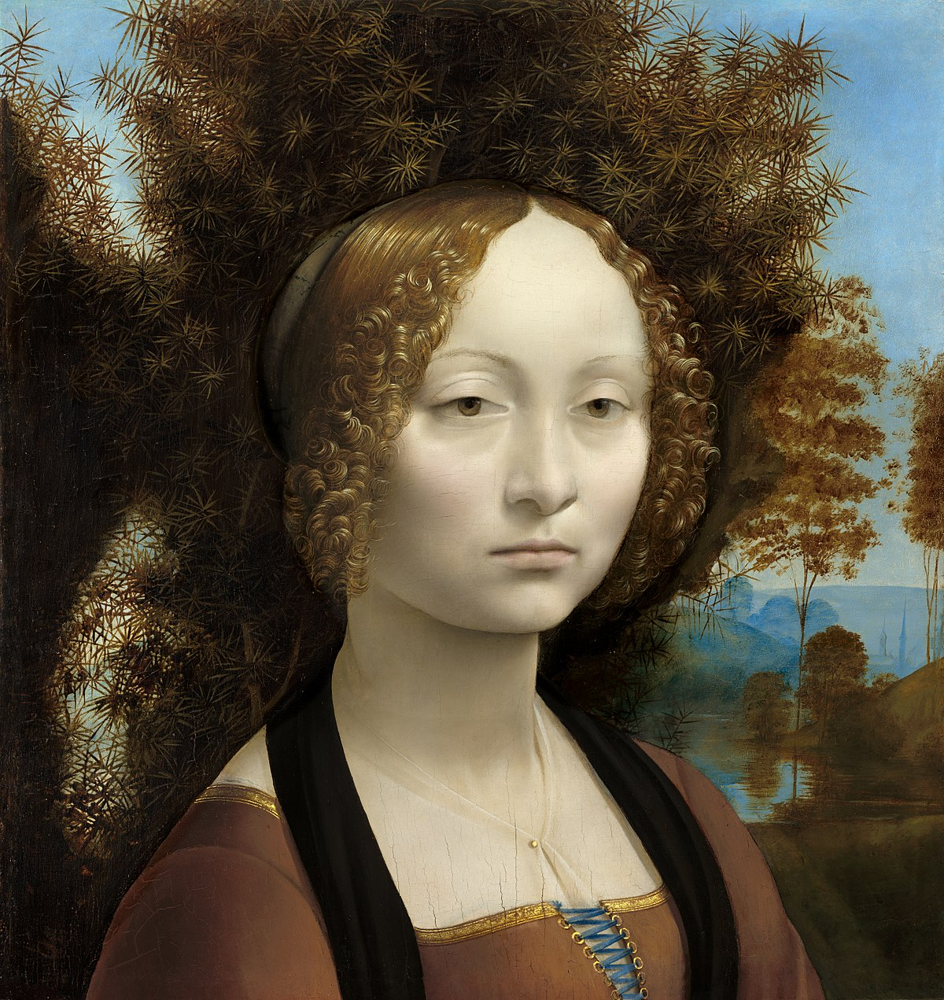

Leonardo Da Vinci was an Italian polymath of the High Renaissance who is widely considered one of the most diversely talented individuals ever to have lived. While his fame initially rested on his achievements as a painter, he also became known for his notebooks, in which he made drawings and notes on science and invention; these involve a variety of subjects including anatomy, astronomy, botany, cartography, painting, and palaeontology. Leonardo's genius epitomized the Renaissance humanist idea, and his collective works compose a contribution to later generations of artists rivalled only by that of his contemporary Michelangelo.
Leonardo Da Vinci
(14/4/1452 – 2/5/1519)

Anatomy
Leonardo is considered to be the very first in history to correctly depict the human fetus in its proper position within the womb. He was also the first to expertly draw the uterine artery and the vascular system of the cervix and vagina. Leonardo is credited with drawing the uterus with only one chamber, contradicting theories that the uterus was comprised of multiple chambers which many believed divided fetuses into separate compartments in the case of twins.
Leonardo’s anatomical drawings were made from corpses he dissected himself (in one case he dissected the body of an elderly man whose peaceful death he had observed, and his drawings document atherosclerosis and cirrhosis of the liver).
Leonardo’s anatomical drawings were made from corpses he dissected himself (in one case he dissected the body of an elderly man whose peaceful death he had observed, and his drawings document atherosclerosis and cirrhosis of the liver).
Leonardo is considered to be the very first in history to correctly depict the human fetus in its proper position within the womb. He was also the first to expertly draw the uterine artery and the vascular system of the cervix and vagina. Leonardo is credited with drawing the uterus with only one chamber, contradicting theories that the uterus was comprised of multiple chambers which many believed divided fetuses into separate compartments in the case of twins.

Mona Lisa
The Mona Lisa is a half-length portrait painting by Italian artist Leonardo da Vinci. Considered an archetypal masterpiece of the Italian Renaissance, it has been described as "the best known, the most visited, the most written about, the most sung about, the most parodied work of art in the world".
The Last Supper
The Last Supper is a late 15th-century mural painting by Italian artist Leonardo da Vinci housed by the refectory of the Convent of Santa Maria delle Grazie in Milan, Italy. Leonardo has depicted the consternation that occurred among the Twelve Apostles when Jesus announced that one of them would betray him.
Salvator Mundi

The painting depicts Jesus in Renaissance dress, making the sign of the cross with his right hand, while holding a transparent, non-refracting crystal orb in his left, signaling his role as Salvator Mundi (Latin for 'Savior of the World') and representing the 'celestial sphere' of the heavens.
Saint John the Baptist
The work depicts John the Baptist in isolation. Through the use of chiaroscuro, the figure appears to emerge from the shadowy background. The saint is dressed in pelts, has long curly hair and is smiling in an enigmatic manner reminiscent of Leonardo's famous Mona Lisa. He holds a reed cross in his left hand while his right hand points up toward heaven like that of Saint Anne in Leonardo's Burlington House Cartoon.
Madonna Litta

The Madonna Litta is a late 15th-century painting. It depicts the Virgin Mary breastfeeding the Christ child, a devotional subject known as the Madonna lactans. The figures are set in a dark interior with two arched openings, as in Leonardo's earlier Madonna of the Carnation, and a mountainous landscape in aerial perspective can be seen beyond. In his left hand Christ holds a goldfinch, which is symbolic of his future Passion.
Lady with an Ermine

Lady with an Ermine is a portrait painting dating to c. 1489–1491. Painted in oils on walnut panel, it is housed at the Czartoryski Museum in Kraków, and is one of Poland's national treasures. The portrait's subject is Cecilia Gallerani, painted at a time when she was the mistress of Ludovico Sforza, Duke of Milan, and Leonardo was in the Duke's service. It is one of only four portraits of women painted by Leonardo
Ginevra de' Benci

Ginevra de' Benci is a portrait painting of the 15th-century Florentine aristocrat Ginevra de' Benci. The oil-on-wood portrait was acquired by the National Gallery of Art in Washington, D.C. in 1967. It is the only painting by Leonardo on public view in the Americas.
The Portrait of a Musician

The Portrait of a Musician is an unfinished painting widely attributed to the Italian Renaissance artist Leonardo da Vinci, dated to c. 1483–1487. Produced while Leonardo was in Milan, the work is painted in oils, and perhaps tempera, on a small panel of walnut wood. It is his only known male portrait painting, and the identity of its sitter has been closely debated among scholars.
Virgin of the Rocks

The painting show the Mary and child Jesus with the infant John the Baptist and an angel Uriel, in a rocky setting which gives the paintings their usual name. The significant compositional differences are in the gaze and right hand of the angel. There are many minor ways in which the works differ, including the colours, the lighting, the flora, and the way in which sfumato has been used.
The Virgin and Child with Saint Anne

The Virgin and Child with Saint Anne is an unfinished oil painting of c. 1503 depicting Saint Anne, her daughter the Virgin Mary and the infant Jesus. Christ is shown grappling with a sacrificial lamb symbolizing his Passion as the Virgin tries to restrain him. The painting was commissioned as the high altarpiece for the Church of Santissima Annunziata in Florence and its theme had long preoccupied Leonardo